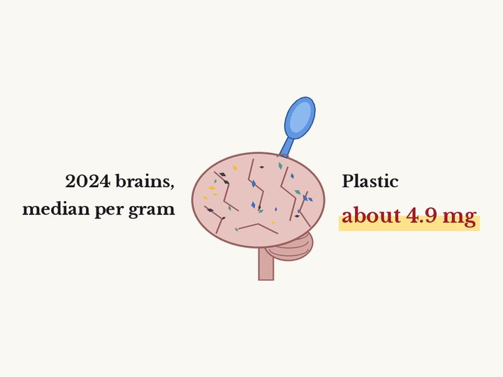
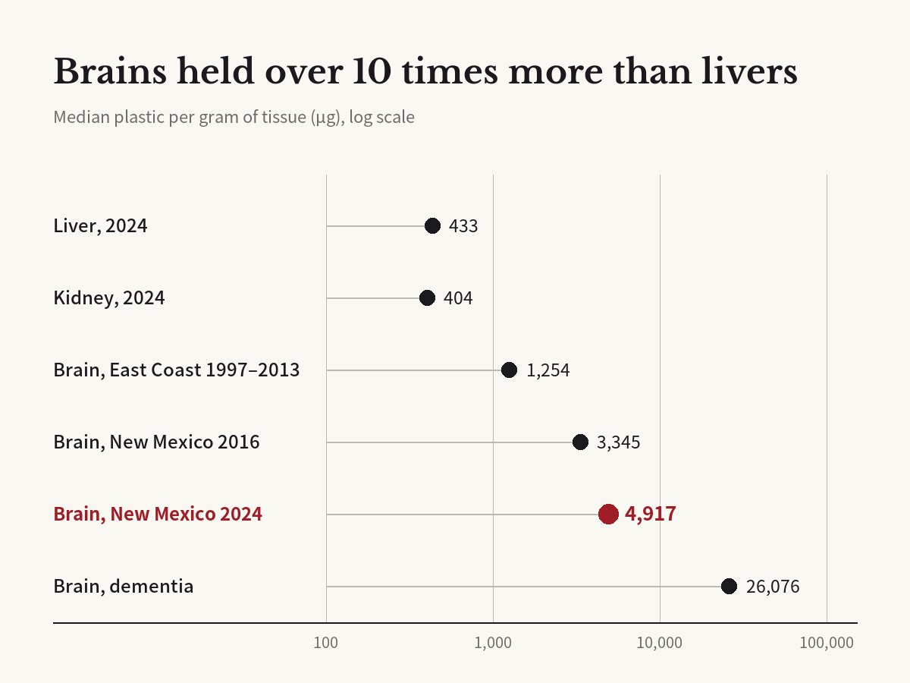

大脑里有一把塑料勺子？
Alexander J. Nihart et al. · Nature Medicine, 2025

01“一把勺子”从哪里来
美国新墨西哥大学马修·坎彭（Matthew Campen）的团队想知道，微塑料和纳米塑料这些极小的塑料碎片在人体哪里积累得最多，数量是否在增加。他们测量了尸检时取下的肝脏、肾脏和大脑组织里的塑料。结果于2025年2月发表在《自然·医学》（Nature Medicine）上。
2024年去世者的样本中，每克组织的塑料中位数为肝脏433微克、肾脏404微克。大脑高得多：2016年的样本为每克3,345微克，2024年的样本为4,917微克，约占脑组织重量的0.5%。坎彭在接受美国有线电视新闻网（CNN）采访时说，这大约相当于每个大脑里有一把塑料勺子，这个说法随后传遍世界。
大脑里的塑料平均75%是聚乙烯，也就是大多数塑料袋和保鲜膜的材料，比例高于肝脏和肾脏。在电子显微镜下，大多数碎片呈尖片状，长不到200纳米，宽不到40纳米。

02测的是逝者，不是活人
所有样本都来自去世的人。新墨西哥州法医办公室提供了2016年和2024年尸检的组织，每年每个器官20到28人。大脑样本都取自额叶皮层。
团队用的是热裂解气相色谱-质谱法。先把组织溶在强碱溶液里，剩下的残渣加热到分解，再根据分解产物推算出含有哪些塑料、有多少。团队还用红外光谱和电子显微镜核对了部分样本。
塑料含量与年龄、性别、种族和死因都没有关系，只与去世的年份有关。团队还检测了美国东海岸三家脑库中27个大脑，死者在1997年到2013年间去世，中位数较低，为每克1,254微克。不过作者表示，不能排除这是地区差异。
12名生前被诊断为痴呆的人，大脑中位数为每克26,076微克。作者写道，这并不能说明塑料导致痴呆。痴呆会让大脑萎缩、血脑屏障变弱、清除废物变慢，这些都可能让塑料浓度自己升高。研究只在一个时间点测量了逝者的组织，无法证明因果关系。
03这些数字有多可靠
大脑的数值格外突出。此前的研究发现，胎盘的中位数为每克63.4微克，睾丸为299微克。大脑的数值更接近颈动脉斑块的报告值。这项研究的新意在于，用同一种方法比较肝脏、肾脏和大脑，并追踪随时间的变化。
团队介绍了质量控制：单独测量只装消化液和保存液的“空白”样本，也测了实验室所用塑料管和移液器吸头的材质。俄克拉何马州立大学的实验室单独测了5个2016年的大脑样本，结果相近。作者声明没有利益冲突。
论文本身也写出了弱点。溶解后，肝脏和肾脏样本的质量去除了99.4%，大脑样本只去除了91.8%。500毫克大脑留下约41毫克残渣，其他器官只留下约3毫克。作者写道，这些残渣里不明的生物物质可能干扰分析，而组织中的脂肪是已知会干扰聚乙烯测量的来源。他们说，所选的溶解方法正是为了降低这种风险。
2025年3月，作者发表更正，修正了重复的补充图片和比例尺错误，并补上漏掉的样本制备步骤。正文报告的浓度没有改动。
04同一期刊上的反驳
2025年11月，《自然·医学》同时刊登了一封批评这篇论文的信和作者的回复。批评信由九名在欧洲工作的研究人员联名，领衔的是法泽尔·A·莫尼赫（Fazel A. Monikh）和杜尚·马泰里奇（Dušan Materić）。
他们最担心的是报告的浓度可能不可靠。信中说，这项研究对污染的控制有限，也就是从实验器材和空气中混入样本的塑料；而且缺少验证步骤，无法说明这种方法在人体组织中是否准确。他们引用的资料包括：结果会随组织溶解方式而变化的研究，以及肝脏和大脑脂肪含量的数据。
脂肪之所以重要，在于聚乙烯是由碳和氢组成的长链，脂肪酸也有长长的碳链，加热后可能分解成相似的碎片。大脑是人体脂肪最多的器官之一，而这项研究恰恰在大脑里测到最多的塑料，其中大部分是聚乙烯。
05这种方法在血液中已经碰过壁
另一个实验室早就遇到过这个问题。2025年1月，澳大利亚昆士兰大学的团队在《环境科学与技术》（Environmental Science & Technology）上发表了用这种方法检测人体血液的结果。
他们开发了一个新的提取步骤，以减少把血液中的天然成分误判为聚乙烯或聚氯乙烯的假阳性。即便如此，往血液里加入已知量的塑料后，这种方法能找回的比例视塑料种类在7%到109%之间。把血液带来的干扰算进去后，实际的检出限比用纯水算出来的高出最多20倍。
在用澳大利亚人血液做的试点检测中，聚乙烯的干扰减少了，但没有消除。团队的结论是，这种方法目前不适合测量生物样本中的聚乙烯或聚氯乙烯。而聚乙烯正是那项大脑研究中测得最多的塑料。
06作者怎么回应
坎彭和同事在回复中说，这次批评是一个机会，可以讨论即便是现有最好的方法，在检测纳米塑料时也存在的不确定性。他们列出了被指出的问题：组织的溶解方式、磷脂等不明生物分子在质谱中造成干扰的可能，以及具体的质量控制步骤。
论文没有被撤回，截至2026年11月已被引用928次。这场争论并不意味着人体里没有塑料。争的是到底有多少，以及这种方法能不能可靠地测出来。
07阅读时要注意
媒体报道的勺子比喻，是把2024年新墨西哥州样本的中位数放大到整个大脑。如果脂肪让测量值偏高，这把勺子也要跟着变小。
大部分样本来自新墨西哥州一个地区，每年每个器官20到28人。从2016年到2024年的上升，比较的是不同年份去世的不同的人，不是同一个人测了两次。
痴呆患者的高数值来自12个大脑，作者自己也没有把塑料当作病因。大脑里的塑料对记忆或健康有什么影响，至今没有人证实。
还有两个问题没有答案。换一种能排除污染和脂肪干扰的方法，人脑里会测出多少？数量真的在逐年增加吗？
原始论文
- Nihart et al. (2025), Nature Medicine 31(4), 1114–1119, doi:10.1038/s41591-024-03453-1
- doi.org/10.1038/s41591-024-03453-1 （在新标签页打开）